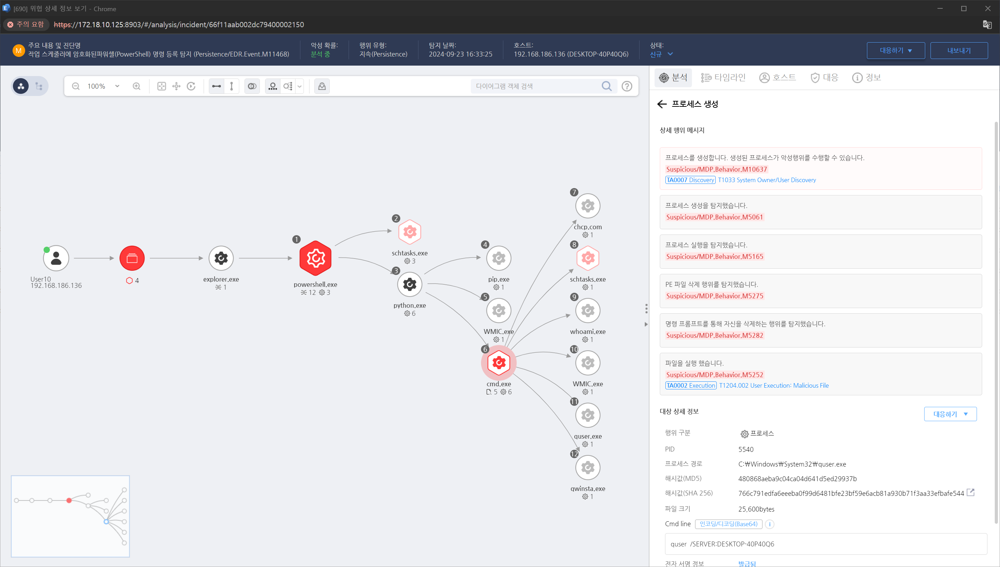

MITRE ATT&CK 액션을 기준으로 대응 방안을 작성
프로세스 실행 인자 모니터링을 통해 "Win32_UserAccount", "quser", "qwinsta", "query" 계정정보 조회 명령 행위를 탐지합니다.

시스템 계정과 관련된 비정상적인 로그온 활동이나 시스템 탐색 활동을 철저히 분석합니다. 특히, 관리자 권한 계정에 대한 비정상적인 접근이나 짧은 시간 내 다수의 계정 정보 조회가 있는지 확인해야 합니다.
계정 조회 후 해당 계정으로 의심스러운 활동이 있는지 확인합니다. 공격자가 수집한 계정을 이용해 추가적인 움직임을 시도할 가능성이 있으므로 해당 계정의 로그인 시간대, 로그인 위치, IP 주소 등 비정상적인 패턴을 감시합니다.
시스템 계정 조회 활동이 의심될 경우, 해당 시스템에 대한 디스크 이미지와 메모리 덤프를 생성하여 포렌식 분석을 수행합니다. 이는 공격자의 침투 경로 및 다음 단계에 대한 단서를 제공할 수 있습니다.
공격자가 계정 정보를 수집한 것으로 확인된 경우, 즉시 해당 계정의 비밀번호를 변경하고, 계정이 악용되지 않도록 사용자를 재교육하거나 계정 복구 절차를 진행합니다.
의심스러운 활동을 한 계정은 일시적으로 차단하여 추가적인 피해를 방지합니다. 필요 시, 계정을 완전히 비활성화하고 새로운 계정을 발급할 수 있습니다.
공격자가 계정 정보를 이용해 네트워크 내부에서 추가적인 움직임을 시도할 수 있으므로 네트워크 모니터링을 강화하고, 비정상적인 트래픽이나 세션을 분석합니다.
계정 정보 조회가 발생한 시스템의 보안 수준과 네트워크 내 민감한 자산에 대한 접근 경로를 재평가하여 추가적인 보안 대책을 마련합니다.
비인가 소프트웨어 실행 방지
강화된 로깅 및 모니터링
권한 관리
네트워크 세분화
보안 교육
다단계 인증
보안 정책 강화
시스템 및 소프트웨어 최신 상태 유지
Action 실행시 함꼐 영향을 받는 다른 Techniqes
| ATT&CK |
|---|
| T1033.000 |
| D3FEND |
|---|
| D3-SCA System Call Analysis |
| D3-PM Platform Monitoring |
| D3-FA File Analysis |